SQLite for Scientists
Dr John A Stevenson / @volcan01010@fosstodon.org
Follow along on GitHub
Databases and SQLite
Databases power applications
Excel is not a database
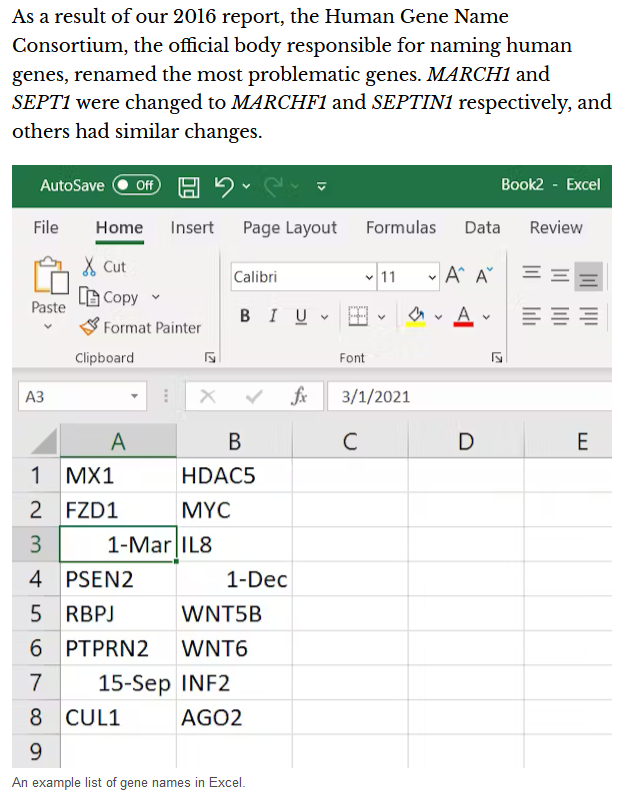The most popular database in the world is

Comparison with PostgreSQL
|
||
|---|---|---|
| SQL language | Yes | Yes |
| Storage | Local | Network |
| JSON parsing | Yes | Yes |
| Concurrent edits | No | Yes |
| Enforced types | No | Yes |
| User functions | No | Yes |
DB Browser for SQLite
Introduction to SQL
SELECT extracts data
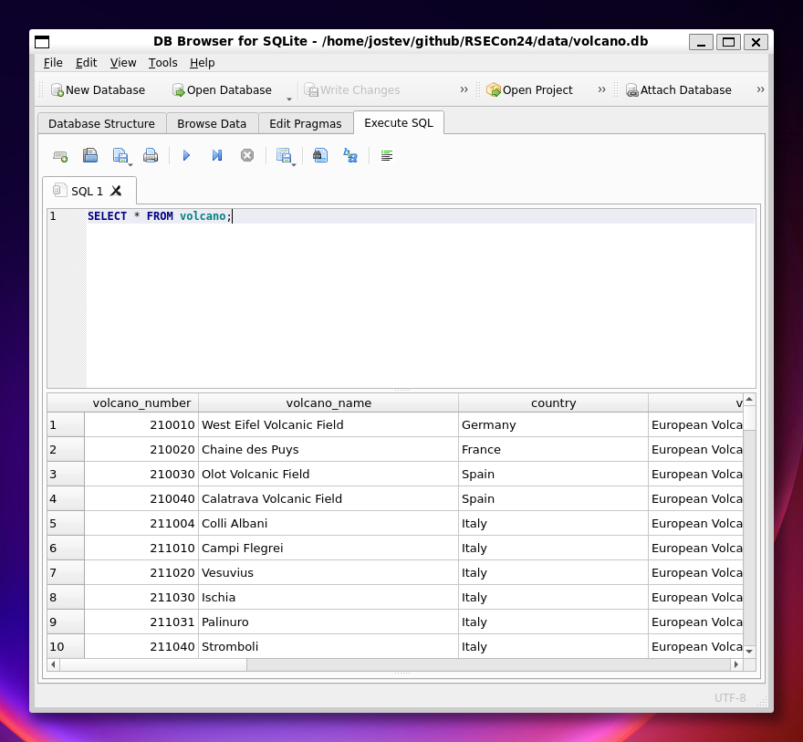Filters and sorting
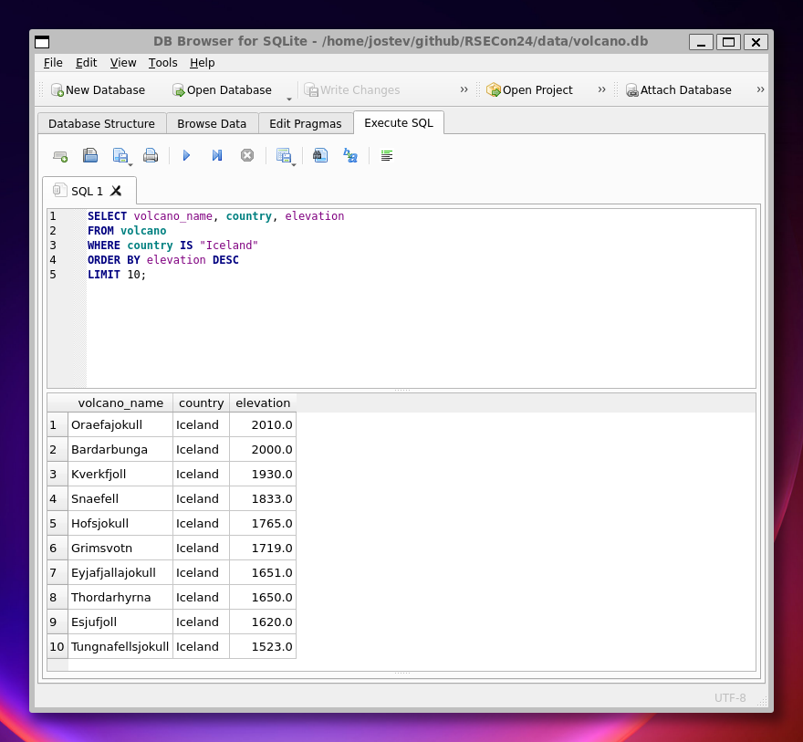JOIN combines tables
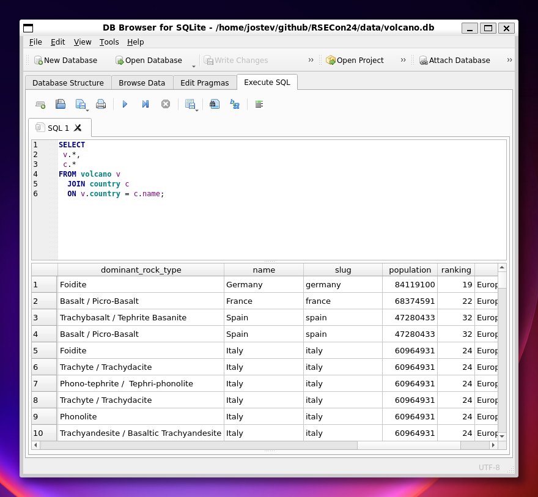GROUP BY aggregates values
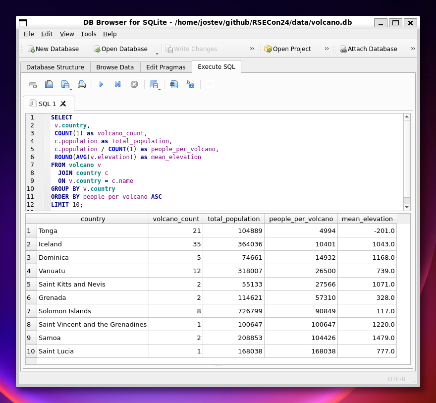VIEWs store pre-defined queries
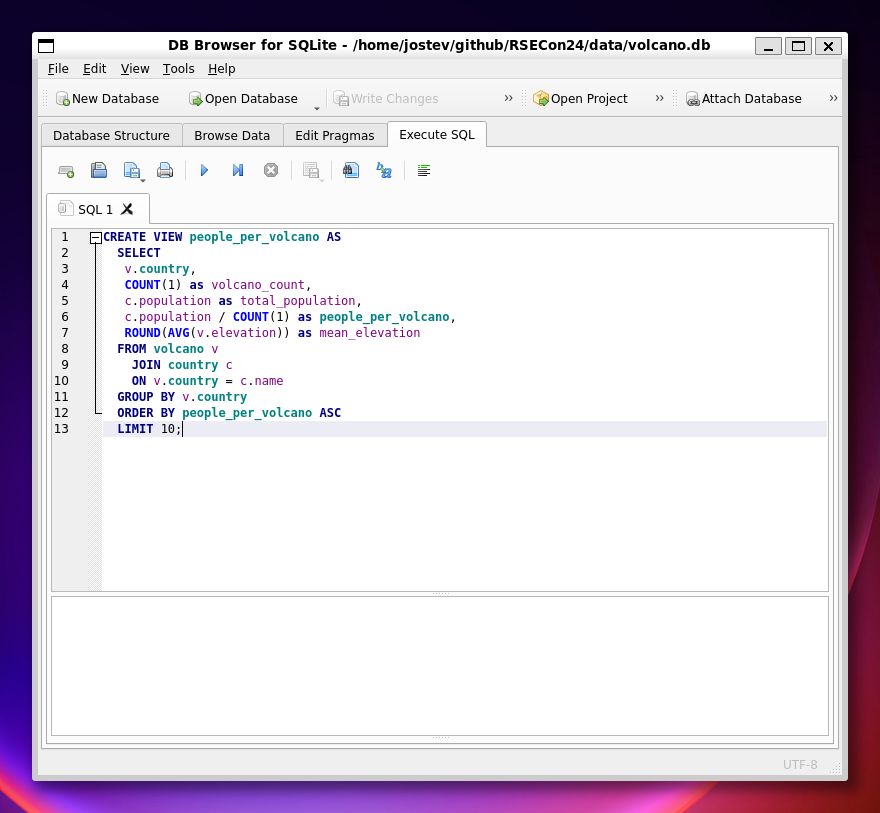Useful tools
QGIS has nice forms...
...and understands relationships...
CREATE TABLE "H3H4_in_soil" (
"fid" INTEGER PRIMARY KEY AUTOINCREMENT,
"geometry" POINT,
"locality" TEXT UNIQUE NOT NULL,
"thickness" REAL,
"notes" TEXT
);
CREATE TABLE "photos" (
"fid" INTEGER PRIMARY KEY AUTOINCREMENT,
"locality_id" TEXT,
"file_path" TEXT,
"notebook" BOOLEAN,
"notes" TEXT,
FOREIGN KEY("locality_id") REFERENCES "H3H4_in_soil"("locality")
);
...and understands relationships...
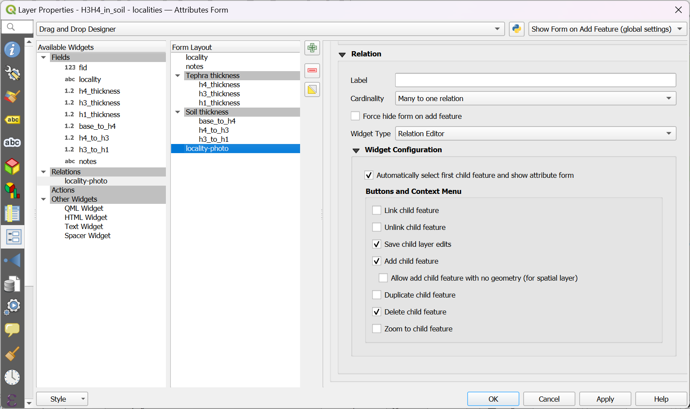...to give an efficient interface
Datasette publishes data to the web...
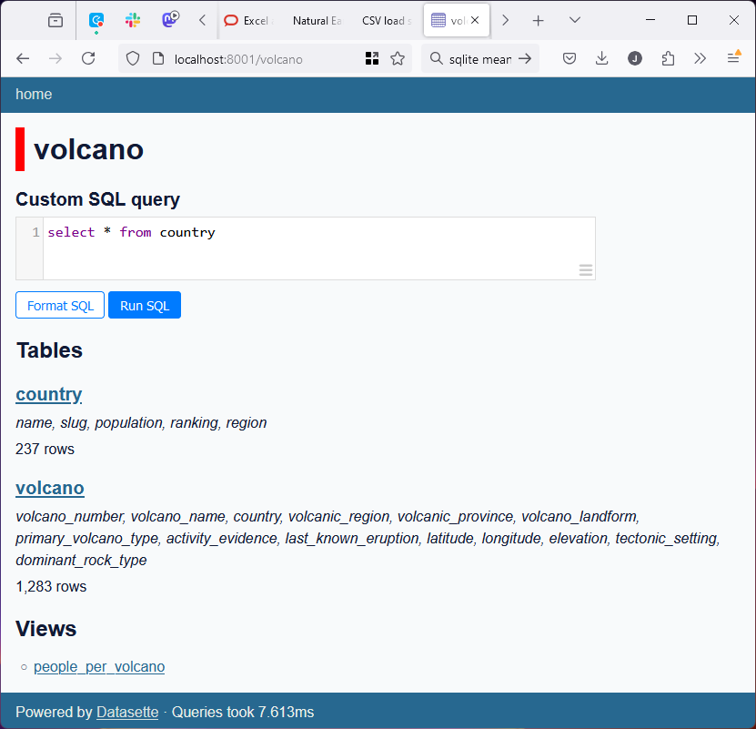...with sorting, filters and queries...
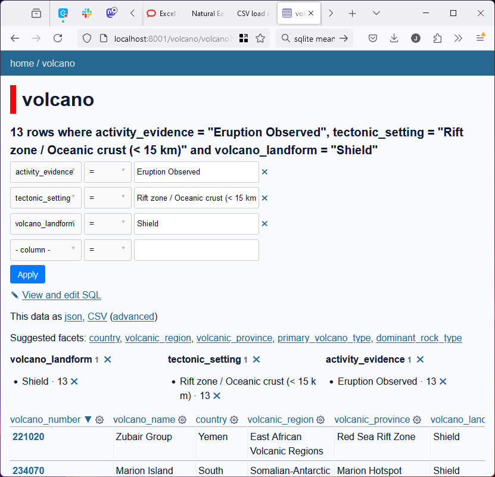...and an API for JSON and CSV
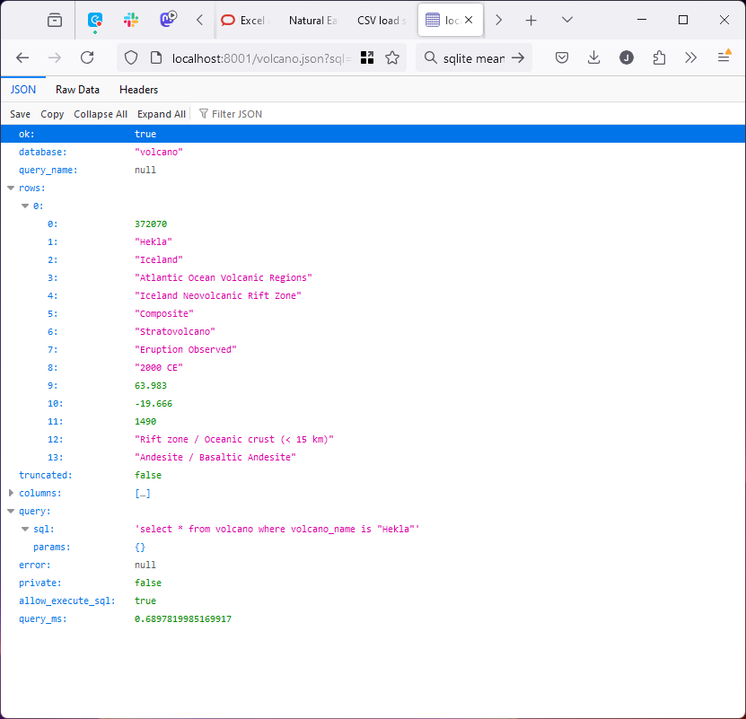ETL Helper simplifies data access...
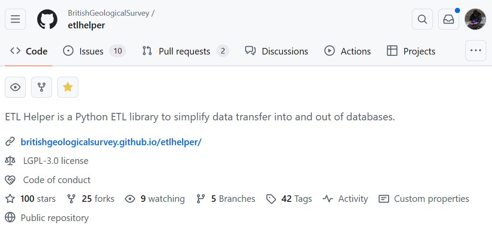...and provides easy data pipelines
...
CREATE_COUNTRY_SQL = """
CREATE TABLE country (
name TEXT,
slug TEXT PRIMARY KEY,
population INTEGER,
ranking INTEGER,
region TEXT
);"""
def create_volcano_db():
with sqlite3.connect(DB_FILE) as conn:
etl.execute(CREATE_VOLCANO_SQL, conn)
etl.execute(CREATE_COUNTRY_SQL, conn)
etl.execute(CREATE_VIEW_SQL, conn)
with open(VOLCANO_CSV, "rt") as f:
next(f) # Skip header
next(f) # Skip header
reader = csv.DictReader(f)
etl.load('volcano', conn, reader, transform=_transform_volcano)
with open(COUNTRIES_CSV, "rt") as f:
next(f) # Skip header
reader = csv.DictReader(f)
etl.load('country', conn, reader, transform=_transform_country)
def _transform_country(chunk):
"""
Drop empty data_of_information column, rename population and cast to int.
"""
for row in chunk:
row['population'] = int(row.pop('value').replace(',', ''))
row.pop("date_of_information")
yield row
...